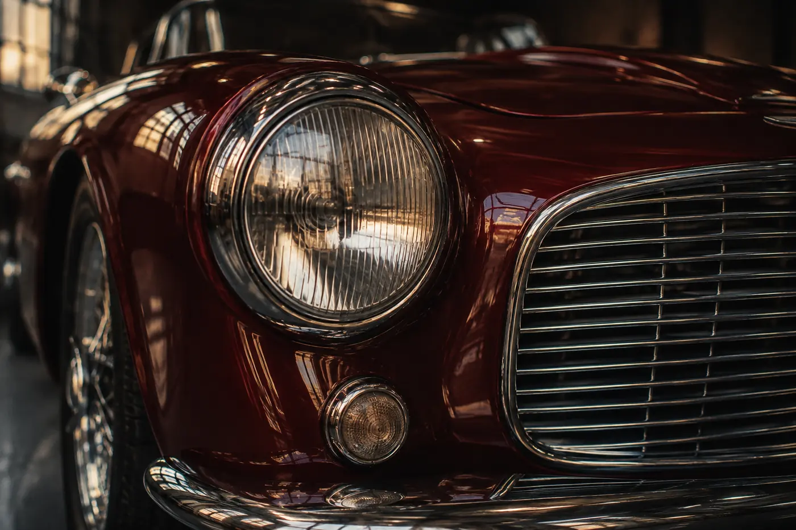
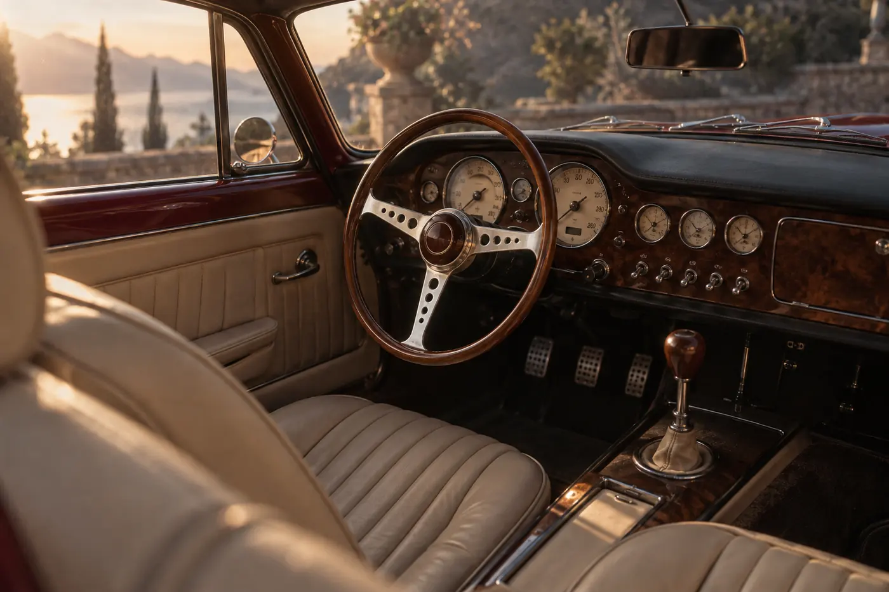

Sixty years of patience in one silhouette.
One continuous stroke from headlamp to tail.
Hand-formed aluminium over a modern chassis. Forty-two will be made.


Hand-blown lamp lenses behind a grille of 31 polished bars.
Viewings are held at the atelier by appointment, one guest at a time. Leave your email and we will write by hand.